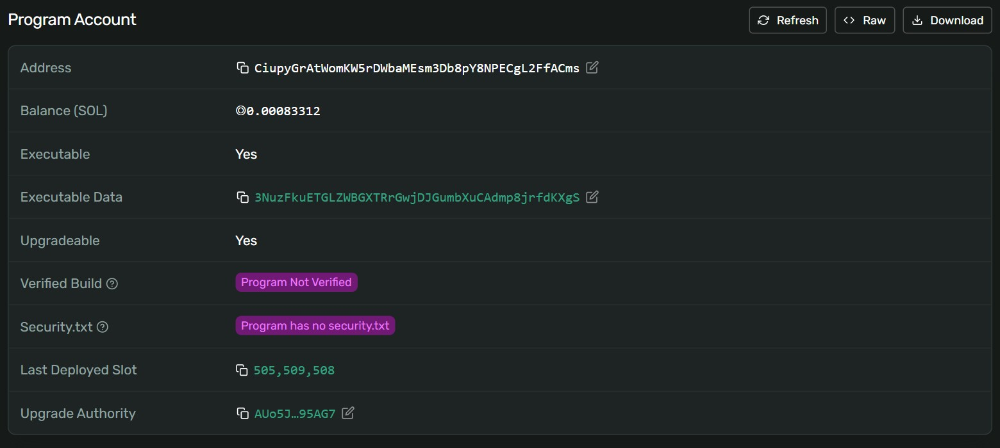

<title>QuantCoin talk</title>
<style>:root{--accent:#0D8A80;--brand:#0B1020}</style>
<svg id="brandmark" hidden viewBox="0 0 512 512"><circle cx="256" cy="256" r="256" fill="#0B1020"/><circle cx="256" cy="256" r="130" fill="none" stroke="#F2F4FA" stroke-width="42"/><path d="M310 310 L392 392" stroke="#F2F4FA" stroke-width="42" stroke-linecap="round"/><ellipse cx="256" cy="256" rx="200" ry="70" fill="none" stroke="#2EE6D6" stroke-width="16" transform="rotate(-30 256 256)"/><circle cx="430" cy="160" r="24" fill="#2EE6D6"/></svg>
<section class="brand media">
  <div class="logo"></div>
  <div class="fill">
    <h1>A token cannot make Solana quantum-safe, but a vault can</h1>
    <p class="lede">What QuantCoin protects, what it cannot, and what it cost to build · Bryan Kwandou</p>
  </div>
  <figure class="pic screen"><figcaption class="credit">Solana Explorer, Mainnet Beta, 30 Sep 2026: mint AsEEay…hpA68W2</figcaption></figure>
  <aside class="notes">This talk is about one narrow claim. No token fixes the chain it runs on. What a token can do is choose where its long-term balances live, and make that place need a signature a quantum computer cannot forge.</aside>
</section>
<section>
  <div class="eyebrow">The question</div>
  <h2>If Ed25519 falls, which Solana balances are still safe?</h2>
  <div class="row"><div class="c8"><div class="hbars">
    <span class="l">Bitcoin</span><div class="t" style="--b:25;--d:0"><i></i></div><span class="v">~25%</span>
    <span class="l">Ethereum</span><div class="t" style="--b:65;--d:1"><i></i></div><span class="v">65%+</span>
    <span class="l">Solana</span><div class="t hi" style="--b:100;--d:2"><i></i></div><span class="v">effectively all</span>
    <span></span><div class="axis"><span>0</span><span>supply with exposed public keys</span><span>100%</span></div><span></span>
  </div></div>
  <div class="c4"><p>Every Solana address is an Ed25519 public key. Shor's algorithm breaks it once a large enough quantum computer exists.</p></div></div>
  <p class="source">Source: Citi Institute, January 2026 [E1] [E2]; NIST IR 8547 [G1]</p>
  <aside class="notes">Most people in this room hold something on Solana. The honest question is not whether this happens this year. It is what still stands if it happens while your money is still sitting there.</aside>
</section>
<section>
  <div class="eyebrow">The answer</div>
  <h2>Only balances that also need a hash-based signature survive</h2>
  <svg viewBox="0 0 1152 330" style="width:100%;height:auto;margin-top:auto;margin-bottom:auto" role="img" aria-label="After Shor's algorithm: a normal wallet's single Ed25519 lock is open; a hybrid vault's Ed25519 lock is open but its hash-based lock stays shut">
    <g font-family="Inter,sans-serif" font-size="24">
    <text x="0" y="30" font-size="28" font-weight="700" fill="#15161A">Normal wallet</text>
    <g transform="translate(250 150)">
      <path d="M34 0 V-58 a34 34 0 0 0 -68 0 V-36" stroke="#9AA0A6" stroke-width="13" fill="none" stroke-linecap="round"/>
      <rect x="-56" y="-4" width="112" height="92" rx="14" fill="#9AA0A6"/><circle cy="34" r="10" fill="#fff"/><path d="M0 40 V60" stroke="#fff" stroke-width="8" stroke-linecap="round"/>
      <text y="124" text-anchor="middle" font-weight="600" fill="#15161A">Ed25519</text></g>
    <text x="0" y="318" font-size="26" font-weight="700" fill="#B42318">Open: the key can be derived</text>
    <path d="M560 0 V330" stroke="#D9DCE1" stroke-width="2"/>
    <text x="620" y="30" font-size="28" font-weight="700" fill="#15161A">Hybrid vault</text>
    <g transform="translate(760 150)">
      <path d="M34 0 V-58 a34 34 0 0 0 -68 0 V-36" stroke="#9AA0A6" stroke-width="13" fill="none" stroke-linecap="round"/>
      <rect x="-56" y="-4" width="112" height="92" rx="14" fill="#9AA0A6"/><circle cy="34" r="10" fill="#fff"/><path d="M0 40 V60" stroke="#fff" stroke-width="8" stroke-linecap="round"/>
      <text y="124" text-anchor="middle" font-weight="600" fill="#15161A">Ed25519</text></g>
    <text x="880" y="200" font-size="48" font-weight="700" fill="#15161A" text-anchor="middle">+</text>
    <g transform="translate(1010 150)">
      <path d="M-34 0 V-40 a34 34 0 0 1 68 0 V0" stroke="#0D8A80" stroke-width="13" fill="none" stroke-linecap="round"/>
      <rect x="-56" y="-4" width="112" height="92" rx="14" fill="#0D8A80"/><circle cy="34" r="10" fill="#fff"/><path d="M0 40 V60" stroke="#fff" stroke-width="8" stroke-linecap="round"/>
      <text y="124" text-anchor="middle" font-weight="600" fill="#15161A">WOTS over SHA-256</text></g>
    <text x="620" y="318" font-size="26" font-weight="700" fill="#0D8A80">Locked: the hash half still holds</text>
    </g>
  </svg>
  <p class="lede" style="margin-top:0">Drawn after a large quantum computer runs Shor's algorithm on the public key.</p>
  <aside class="notes">That is the whole finding. Everything after this slide is how we built the right-hand box, what it costs, and where it stops working.</aside>
</section>
<section>
  <div class="eyebrow">Why hash-based</div>
  <h2>Hash signatures lose only half their bits to Grover</h2>
  <div class="row"><div class="c6"><div class="cols" style="--max:192">
    <div style="--v:192;--d:0"><b>192 bits</b><i></i><span>Normal computer</span></div>
    <div class="hi" style="--v:96;--d:1"><b>~96 bits</b><i></i><span>Grover</span></div>
  </div></div><div class="c6"><p>A square-root speedup halves the bits. Half of a strong hash is still out of reach.</p><p class="lede">NIST standardized this family as SLH-DSA.</p></div></div>
  <p class="source">Source: NIST, August 2024 [G3]; QuantCoin whitepaper, section 3.3</p>
  <aside class="notes">Lattice schemes are faster and smaller, but newer. Hash-based signatures assume only that SHA-256 behaves like a hash. For money meant to sit for decades, the oldest assumption is the one I wanted.</aside>
</section>
<section>
  <div class="eyebrow">Design</div>
  <h2>Winternitz keys sign once, so every spend empties the vault</h2>
  <svg viewBox="0 0 1152 320" style="width:100%;height:auto;margin-top:auto;margin-bottom:auto" role="img" aria-label="Vault 1 holding 1,000 QC signs once: 40 QC go to the destination, 960 QC move to vault 2 with a new key, and vault 1 closes">
    <defs><marker id="ar5" viewBox="0 0 10 10" refX="9" refY="5" markerUnits="userSpaceOnUse" markerWidth="20" markerHeight="20" orient="auto"><path d="M0 0 L10 5 L0 10 Z" fill="#15161A"/></marker><marker id="ar5t" viewBox="0 0 10 10" refX="9" refY="5" markerUnits="userSpaceOnUse" markerWidth="20" markerHeight="20" orient="auto"><path d="M0 0 L10 5 L0 10 Z" fill="#0D8A80"/></marker></defs>
    <g font-family="Inter,sans-serif" font-size="24" fill="#15161A">
    <rect x="2" y="96" width="350" height="128" rx="16" fill="none" stroke="#9AA0A6" stroke-width="3" stroke-dasharray="10 8"/>
    <text x="28" y="140" font-size="28" font-weight="700">Vault 1</text><text x="28" y="176">1,000 QC · WOTS key #1</text>
    <text x="28" y="208" font-weight="600" fill="#B42318">closed after this spend</text>
    <path d="M354 150 C 520 150 540 60 690 60" stroke="#15161A" stroke-width="3" fill="none" marker-end="url(#ar5)"/>
    <path d="M354 170 C 520 170 540 262 690 262" stroke="#0D8A80" stroke-width="5" fill="none" marker-end="url(#ar5t)"/>
    <text x="470" y="96" font-weight="600">pay</text><text x="460" y="262" font-weight="600" fill="#0D8A80">change</text>
    <text x="28" y="264" font-size="20" fill="#5F6570">signs once: Ed25519 + WOTS</text>
    <rect x="700" y="8" width="448" height="104" rx="16" fill="none" stroke="#15161A" stroke-width="3"/>
    <text x="726" y="52" font-size="28" font-weight="700">Destination</text><text x="726" y="88">40 QC</text>
    <rect x="700" y="208" width="448" height="108" rx="16" fill="#0D8A80"/>
    <text x="726" y="252" font-size="28" font-weight="700" fill="#fff">Vault 2</text><text x="726" y="290" fill="#fff">960 QC · new WOTS key #2</text>
    </g>
  </svg>
  <p class="source">Example amounts. An on-chain spent marker stops key #1 signing again: QUANTCOIN repo, commit 48572e7</p>
  <aside class="notes">A one-time signature leaks part of its key each time it signs. Signing twice would let someone forge. So the program never allows it: spend means drain, and the change moves to a fresh key.</aside>
</section>
<section>
  <div class="eyebrow">Design</div>
  <h2>The vault address itself commits to both keys</h2>
  <svg viewBox="0 0 1152 320" style="width:100%;height:auto;margin-top:auto;margin-bottom:auto" role="img" aria-label="At creation the key hash and owner derive the vault address; at a spend the program rebuilds the key hash from the signature and derives the address again; only a match can spend">
    <defs><marker id="ar6" viewBox="0 0 10 10" refX="9" refY="5" markerWidth="7" markerHeight="7" orient="auto" markerUnits="userSpaceOnUse"><path d="M0 0 L10 5 L0 10 Z" fill="#15161A"/></marker></defs>
    <g font-family="Inter,sans-serif" font-size="22" fill="#15161A">
      <text x="0" y="28" font-weight="600" fill="#5F6570">Vault created</text>
      <rect x="0" y="44" width="340" height="96" rx="14" fill="none" stroke="#15161A" stroke-width="3"/>
      <text x="26" y="84" font-weight="700">Key hash + owner</text><text x="26" y="118" fill="#5F6570">seeds</text>
      <text x="0" y="200" font-weight="600" fill="#5F6570">Spend</text>
      <rect x="0" y="216" width="340" height="96" rx="14" fill="none" stroke="#15161A" stroke-width="3" stroke-dasharray="10 8"/>
      <text x="26" y="256" font-weight="700">Signature</text><text x="26" y="290" fill="#5F6570">rebuilds the key hash</text>
      <path d="M344 92 H640" stroke="#15161A" stroke-width="3" fill="none" marker-end="url(#ar6)"/>
      <path d="M344 264 H640" stroke="#15161A" stroke-width="3" fill="none" marker-end="url(#ar6)"/>
      <text x="380" y="80">vault address</text><text x="380" y="252">address again</text>
      <rect x="650" y="44" width="220" height="268" rx="14" fill="#EDEBE6"/>
      <text x="760" y="160" text-anchor="middle" font-size="64" font-weight="700">=</text><text x="760" y="206" text-anchor="middle" font-weight="600">same?</text>
      <path d="M874 130 H930" stroke="#0D8A80" stroke-width="4" fill="none"/><path d="M874 226 H930" stroke="#B42318" stroke-width="4" fill="none"/>
      <rect x="936" y="92" width="214" height="76" rx="14" fill="#0D8A80"/><text x="960" y="140" font-weight="700" fill="#fff">yes: spend</text>
      <rect x="936" y="188" width="214" height="76" rx="14" fill="none" stroke="#B42318" stroke-width="3"/><text x="960" y="236" font-weight="700" fill="#B42318">no: refuse</text>
    </g>
  </svg>
  <p class="lede" style="margin-top:0">No public key is stored. After a spend, the program writes one marker: spent.</p>
  <aside class="notes">There is no account holding a public key that could be swapped. If the signature does not rebuild the key that made the address, the spend fails. The internal audit found that an old signature could be replayed against a token account created later for the same vault, finding M-1. The fix hands the empty vault address to the program after the spend, so any second spend is refused.</aside>
</section>
<section>
  <div class="eyebrow">Cost</div>
  <h2>A quantum-safe spend uses about 610,000 compute units</h2>
  <div class="row"><div class="c8"><div class="hbars">
    <span class="l">Typical spend</span><div class="t hi" style="--b:43.6;--d:0"><i></i></div><span class="v">610k</span>
    <span class="l">Worst case</span><div class="t" style="--b:77.9;--d:1"><i></i></div><span class="v">1.09M</span>
    <span class="l">Limit</span><div class="t" style="--b:100;--d:2"><i></i></div><span class="v">1.4M</span>
    <span></span><div class="axis"><span>0</span><span>compute units per transaction</span><span>1.4M</span></div><span></span>
  </div></div>
  <div class="c4"><p>The transaction is 1,124 of 1,232 bytes. It fits, but only just.</p></div></div>
  <p class="source">Source: QuantCoin README, measured on devnet 2026-09-23; Solana docs, compute limit [X1]</p>
  <aside class="notes">This is the price. Verifying a Winternitz signature means hashing a lot. It fits in one transaction, but only just, which is why this is for cold storage and not for buying coffee.</aside>
</section>
<section class="media">
  <div class="eyebrow">Cost</div>
  <h2>Deploying the program cost 0.0376 SOL on devnet</h2>
  <div class="kpis" style="grid-auto-flow:row;gap:28px;margin:auto 0">
    <div class="hi"><b>0.0376 SOL</b><span>first deploy, 6,872-byte build</span></div>
    <div><b>0.0041 SOL</b><span>minting the full 22 trillion supply into the first vault</span></div>
  </div>
  <p class="source">Source: QuantCoin README, devnet deployment table; upgrade to the 7,464-byte build, commit 48572e7</p>
  <figure class="pic screen"><figcaption class="credit">Solana Explorer, devnet, 29 Sep 2026: program CiupyG…L2FfACms</figcaption></figure>
  <aside class="notes">Small program, small rent. Pinocchio instead of Anchor is most of the reason it stayed that small. The fix for finding M-1 grew it to 7,464 bytes, deployed as an upgrade to the same address you see on the explorer.</aside>
</section>
<section>
  <div class="eyebrow">Proof</div>
  <h2>The whole supply moved once on devnet, and it matched</h2>
  <div class="flow rv">
    <div><svg class="ico"><use href="#i-wallet"/></svg><b>Old vault</b><span>Whole supply</span></div><em>→</em>
    <div><svg class="ico"><use href="#i-send"/></svg><b>1,000,000 QC</b><span>Paid out</span></div><em>+</em>
    <div class="hi"><svg class="ico"><use href="#i-shield"/></svg><b>21,999,999,000,000 QC</b><span>Refunded to a fresh vault</span></div><em>→</em>
    <div><svg class="ico"><use href="#i-lock"/></svg><b>Closed</b><span>Old vault removed</span></div>
  </div>
  <p class="lede">Spend Np26Uxfw: the TypeScript signer and Rust verifier agreed.</p>
  <p class="source">Source: QuantCoin README, devnet run 2026-09-23</p>
  <aside class="notes">Two separate implementations of the same hash chains, in two languages, agreeing on a real transaction. That is the test I trust more than any unit test.</aside>
</section>
<section>
  <div class="eyebrow">Audit</div>
  <h2>The internal audit caught a test that passed for the wrong reason</h2>
  <table class="t rv" style="font-size:22px">
    <tr><th>Finding</th><th>What was wrong</th><th>Now</th></tr>
    <tr class="hi"><td>F1 · tests</td><td>Attack tests failed on an earlier check than the one they claimed to test</td><td>Each asserts its exact error code</td></tr>
    <tr><td>F2 · client</td><td>A failed broadcast could leave a vault locked</td><td>Fixed</td></tr>
  </table>
  <p class="source">Source: QuantCoin audit/AUDIT.md, findings F1 and F2</p>
  <aside class="notes">This is my favourite finding because it is so ordinary. The tests were green. They were green for the wrong reason. It only showed up when each test had to name the exact error it expected.</aside>
</section>
<section>
  <div class="eyebrow">Caveats</div>
  <h2>QuantCoin in a normal wallet is exactly as exposed as SOL</h2>
  <svg viewBox="0 0 1152 300" style="width:100%;height:auto;margin-top:auto;margin-bottom:auto" role="img" aria-label="In the vault a balance needs an Ed25519 and a Winternitz signature; withdrawn to a normal wallet it needs only Ed25519, the same as SOL">
    <defs><marker id="ar11" viewBox="0 0 10 10" refX="9" refY="5" markerWidth="7" markerHeight="7" orient="auto" markerUnits="userSpaceOnUse"><path d="M0 0 L10 5 L0 10 Z" fill="#15161A"/></marker></defs>
    <g font-family="Inter,sans-serif" font-size="22">
      <text x="0" y="30" font-size="28" font-weight="700" fill="#15161A">In the vault</text>
      <g transform="translate(90 130)">
      <path d="M-34 0 V-40 a34 34 0 0 1 68 0 V0" stroke="#15161A" stroke-width="13" fill="none" stroke-linecap="round"/>
      <rect x="-56" y="-4" width="112" height="92" rx="14" fill="#15161A"/><circle cy="34" r="10" fill="#fff"/><path d="M0 40 V60" stroke="#fff" stroke-width="8" stroke-linecap="round"/>
      <text y="124" text-anchor="middle" font-weight="600" fill="#15161A">Ed25519</text></g><text x="200" y="180" font-size="44" font-weight="700" fill="#15161A" text-anchor="middle">+</text><g transform="translate(310 130)">
      <path d="M-34 0 V-40 a34 34 0 0 1 68 0 V0" stroke="#0D8A80" stroke-width="13" fill="none" stroke-linecap="round"/>
      <rect x="-56" y="-4" width="112" height="92" rx="14" fill="#0D8A80"/><circle cy="34" r="10" fill="#fff"/><path d="M0 40 V60" stroke="#fff" stroke-width="8" stroke-linecap="round"/>
      <text y="124" text-anchor="middle" font-weight="600" fill="#15161A">Winternitz</text></g>
      <path d="M430 150 H660" stroke="#15161A" stroke-width="3" fill="none" marker-end="url(#ar11)"/>
      <text x="444" y="132" font-weight="600" fill="#15161A">withdraw to Phantom</text>
      <text x="720" y="30" font-size="28" font-weight="700" fill="#15161A">In a normal wallet</text>
      <g transform="translate(810 130)">
      <path d="M-34 0 V-40 a34 34 0 0 1 68 0 V0" stroke="#15161A" stroke-width="13" fill="none" stroke-linecap="round"/>
      <rect x="-56" y="-4" width="112" height="92" rx="14" fill="#15161A"/><circle cy="34" r="10" fill="#fff"/><path d="M0 40 V60" stroke="#fff" stroke-width="8" stroke-linecap="round"/>
      <text y="124" text-anchor="middle" font-weight="600" fill="#15161A">Ed25519 only</text></g>
      <text x="720" y="290" font-size="26" font-weight="700" fill="#B42318">Shor opens it, same as SOL</text>
    </g>
  </svg>
  <p class="lede" style="margin-top:0">Also: key files are plaintext until moved offline, and no outside auditor has read the code.</p>
  <p class="source">Source: QuantCoin README; audit/AUDIT.md finding F5</p>
  <aside class="notes">I want to be precise about the limits. Tokens you move to Phantom are protected by Phantom, which means Ed25519. The vault is for balances that sit still. It is live on mainnet, but nobody outside has checked the code yet, so the upgrade key stays with a two-of-three multisig until someone does.</aside>
</section>
<section>
  <div class="eyebrow">Try this</div>
  <h2>List every Ed25519 key that could still move your treasury</h2>
  <div class="split">
    <div class="iso" data-of="4" data-hi="1" data-icon="key" style="--s:120px;max-width:300px;flex:none"></div>
    <table class="t rv" style="font-size:22px;margin-top:0">
      <tr><th>Key on QuantCoin mainnet</th><th>State, 30 Sep 2026</th></tr>
      <tr class="hi"><td>Program upgrade authority</td><td>Live, in a 2-of-3 Squads multisig; made final after the audit</td></tr>
      <tr><td>Mint authority</td><td>Revoked</td></tr>
      <tr><td>Freeze authority</td><td>Revoked</td></tr>
      <tr><td>Metadata update authority</td><td>Revoked</td></tr>
    </table>
  </div>
  <p class="source">Source: Solana Explorer, mint AsEEay…hpA68W2 and program CiupyG…FACms, read 30 Sep 2026. Each live key is a quantum backdoor.</p>
  <aside class="notes">This is the thing you can do on Monday without any new cryptography. Count the keys that can still change your token. Every one of them is a single Ed25519 signature away from someone else.</aside>
</section>
<section class="media">
  <div class="eyebrow">Summary</div>
  <h2>A token cannot make Solana quantum-safe, but a vault can</h2>
  <table class="t rv">
    <tr><th></th><th>Wallet</th><th>Vault</th></tr>
    <tr><td>Signatures</td><td>Ed25519</td><td>+ Winternitz</td></tr>
    <tr class="hi"><td>Ed25519 broken</td><td>Funds lost</td><td>Refused</td></tr>
    <tr class="hi"><td>Devnet attacks</td><td></td><td>13 of 13 refused</td></tr>
  </table>
  <p class="source">Code, whitepaper and audit: github.com/bryankwandou/QUANTCOIN</p>
  <figure class="pic screen"><figcaption class="credit">github.com/bryankwandou/QUANTCOIN, audit/devnet-attack-run-v2.txt, commit 48572e7</figcaption></figure>
  <aside class="notes">Same sentence as the start. Everything is public, including the parts that are not finished.</aside>
</section>
